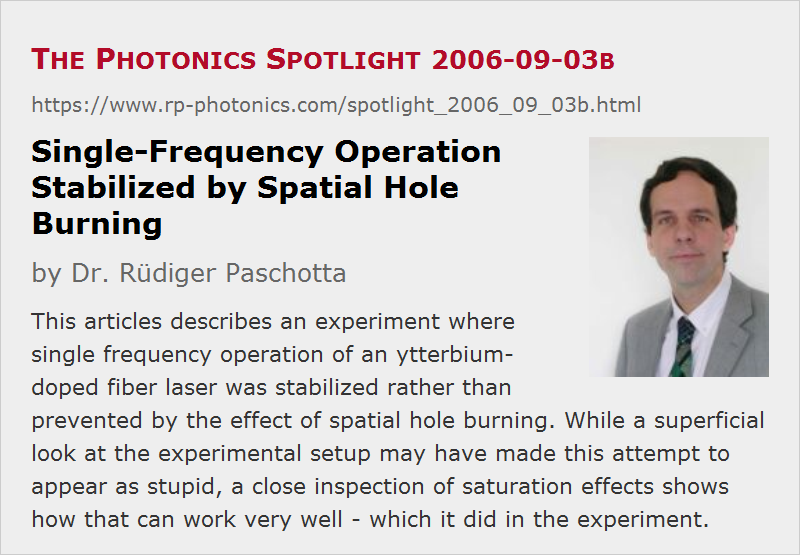

Single-Frequency Operation Stabilized by Spatial Hole Burning
Posted on 2006-09-03 as a part of the Photonics Spotlight (available as e-mail newsletter!)
Permanent link: https://www.rp-photonics.com/spotlight_2006_09_03b.html
Author: Dr. Rüdiger Paschotta, RP Photonics Consulting GmbH
Abstract: This articles describes an experiment where single frequency operation of an ytterbium-doped fiber laser was stabilized rather than prevented by the effect of spatial hole burning. While a superficial look at the experimental setup may have made this attempt to appear as stupid, a close inspection of saturation effects shows how that can work very well - which it did in the experiment.

Ref.: M. Horowitz et al., Electron. Lett. 30, 648 (1994); Y. Cheng et al., Opt. Lett. 20 (8), 875 (1995); R. Paschotta et al., “Single-frequency ytterbium-doped fiber laser stabilized by spatial hole burning”, Opt. Lett. 22 (1), 40 (1997); encyclopedia articles on spatial hole burning and single-frequency lasers
It is widespread textbook knowledge that the phenomenon of spatial hole burning is the effect which in many cases makes single-frequency operation of a laser impossible. This is quite easy to understand: if the laser oscillates only on a single resonator mode, spatial hole burning inevitably leads to a stronger saturation of the gain for that lasing mode than for other modes, which all have less overlap with the saturation pattern.
It is also not difficult to grasp that in an absorbing medium the effect can be essentially the opposite: an oscillating mode in an unpumped quasi-three-level gain medium can saturate the absorption for itself more than for other modes. This idea has been exploited in 1994 and 1995 (see the references above): a section of unpumped erbium-doped fiber in a fiber laser can serve to narrow the linewidth or even stabilize single-frequency operation. In both cases, spatial hole burning in the gain section has been reduced (e.g. by unidirectional operation of a ring resonator), so that essentially only the stabilizing effect of SHB could become effective.
Still it should appear unlikely that spatial hole burning could be beneficial for single-frequency operation of a simple standing-wave fiber laser, even if the fiber is overlong, so that a part of it is unpumped. After all, the laser gain must be higher than the saturable losses for lasing to occur; therefore, one should expect that the stabilizing effect of the absorbing fiber section should be weaker than the destabilizing effect of the gain section. Therefore, the author of these lines would not have been stupid enough to try building such a laser, had he not envisaged that some subtle properties of gain saturation can under certain circumstances totally modify the balance of stabilizing and destabilizing effects. Specifically, this is the case for an ytterbium-doped fiber laser pumped at 975 nm, where the pump absorption is strongly saturated for pump powers e.g. around 100 mW. A closer inspection of the corresponding equations shows that the effective signal saturation power can be strongly increased in this regime. In effect, the saturation effects caused by the laser wave are strongly reduced in the gain section of the fiber, but not in the unpumped absorbing section. The experiment worked very nicely: the laser operated in a very stable fashion on a single resonator mode. Even when the fiber was heated and the mode frequency drifted away over a distance corresponding to several hundred times the free spectral range of the laser resonator, the laser insisted still to lase on the original mode, despite the now higher intrinsic gain of other modes.
Note that such an experiment could have been done only either by a totally ignorant person (not knowing about the effect of spatial hole burning) or by someone understanding all this really well, but not by a half-educated person “knowing” from text books that such an attempt could only fail.
This article is a posting of the Photonics Spotlight, authored by Dr. Rüdiger Paschotta. You may link to this page and cite it, because its location is permanent. See also the RP Photonics Encyclopedia.
Note that you can also receive the articles in the form of a newsletter or with an RSS feed.
Questions and Comments from Users
Here you can submit questions and comments. As far as they get accepted by the author, they will appear above this paragraph together with the author’s answer. The author will decide on acceptance based on certain criteria. Essentially, the issue must be of sufficiently broad interest.
Please do not enter personal data here; we would otherwise delete it soon. (See also our privacy declaration.) If you wish to receive personal feedback or consultancy from the author, please contact him e.g. via e-mail.
By submitting the information, you give your consent to the potential publication of your inputs on our website according to our rules. (If you later retract your consent, we will delete those inputs.) As your inputs are first reviewed by the author, they may be published with some delay.
|  |
If you like this page, please share the link with your friends and colleagues, e.g. via social media:
These sharing buttons are implemented in a privacy-friendly way!